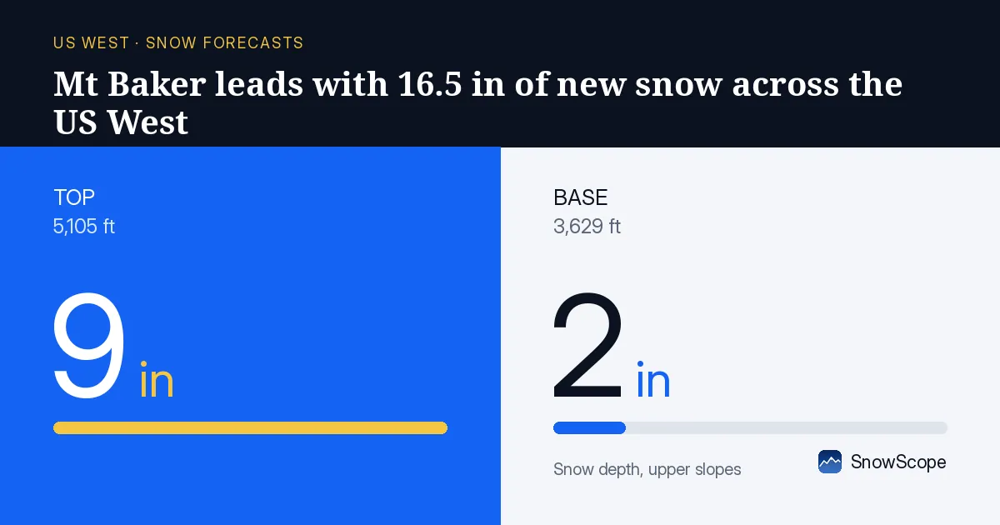
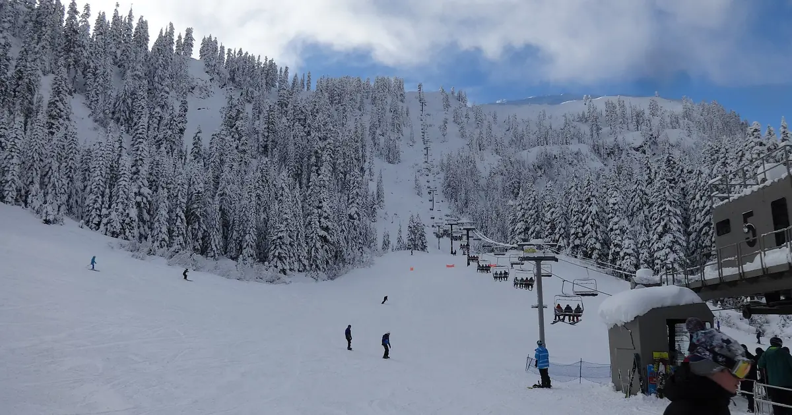
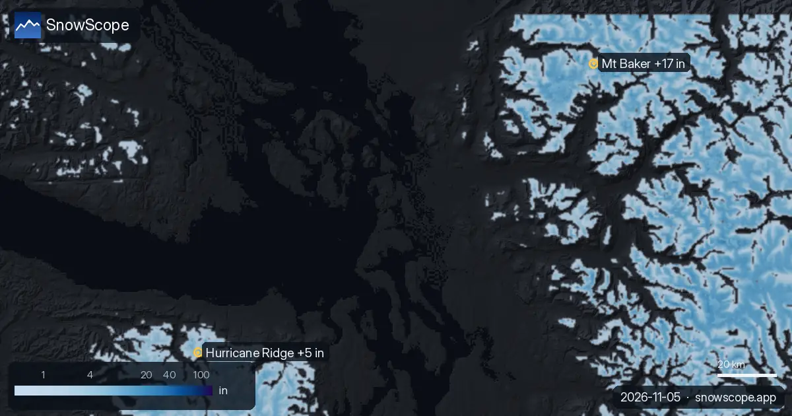

Mt Baker leads with 16.5 in of new snow across the US West
Mt Baker will receive substantially more new snow than any other major resort in the US West through early November, with our model forecasting 16.5 inches (42 cm) between November 6 and 8. Hurricane Ridge, the second-place contender, will see only 5 inches (13 cm) during the same window—based on our model run on November 5.
See the live snow forecast for Mt Baker in the SnowScope appSnow depth, powder alerts and the 3D map, free.
Mt Baker's commanding lead
Mt Baker holds a decisive advantage over all other tracked resorts. The 16.5 inches (42 cm) forecast for the mountain's upper slopes over the next three days represents a substantial injection of fresh snow for early November. The region's dry climate demands periodic system arrivals to build a skiable base, so this incoming snow carries disproportionate weight for November skiing.
Compared to past winters, Mt Baker's mid-elevation snow depth of 5.5 inches (14 cm) today is notably strong. This depth runs at 175 per cent of what we typically see at this height in November. By November 8, our model predicts it will climb to roughly 12 inches (30 cm) at mid-elevation—a solid platform for the season's start.
| Resort | Snow depth | New snow, 72 h | Coming, next days | Top |
|---|---|---|---|---|
| Mt Baker | 17 in (42 cm) | 6 in (16 cm) | 17 in (42 cm) | 5,105 ft (1,556 m) |
| Hurricane Ridge | 9 in (23 cm) | 2 in (4 cm) | 5 in (13 cm) | 5,446 ft (1,660 m) |

November 8 brings the heavyweight arrival
The snow does not fall evenly across the forecast window. November 6 will deliver 4.3 inches (11 cm) to Mt Baker's upper zones. November 7 brings only 2.4 inches (6 cm). But November 8 reverses the pattern: 10 inches (25 cm) will arrive on that single day, accounting for most of the three-day total.
The freezing level plays a crucial role in determining where snow sticks. On November 5, it ranges from 4,199 feet (1,280 m) to 5,676 feet (1,730 m) across the mountain. By November 6, it rises sharply to between 4,298 feet (1,310 m) and 10,039 feet (3,060 m)—meaning most precipitation will initially fall as rain at lower elevations. November 8 sees the freezing level settle closer to 7,218 feet (2,200 m) minimum, which suggests that day's heavier arrival will bring snow to mid-elevation terrain where it accumulates most effectively.

Elevation sorts the new snow sharply
The model shows unambiguous elevation sorting. At Mt Baker's base (3,630 ft / 1,106 m), only 1.6 inches (4 cm) of new snow is forecast across the next week. Mid-elevation (4,364 ft / 1,331 m) receives 6.3 inches (16 cm). The upper slopes (5,105 ft / 1,556 m) receive 9.4 inches (24 cm). This hierarchy reflects temperature profiles: lower elevations brush against the rain line, so accumulation stays thin and intermittent. Skiers targeting skiable bases should orient toward the mid and upper mountain zones.
What the model reveals about forecast uncertainty
This forecast emerges from our model run on November 5. As with all three-day predictions, the picture can shift as fresh data streams in. Storm positioning, precipitation intensity, and the day-to-day swings in the freezing level remain the chief sources of forecast variation.
Early-season snow is notoriously thin and uneven across slopes. Rocks and low vegetation will protrude through 16.5 inches (42 cm) on many exposures. At Wells Creek, a monitoring station 9.2 kilometres from Mt Baker at 4,039 feet (1,231 m) elevation, the measurement recorded on November 1 was just 5 inches (13 cm)—a stark reminder of how spare the foundation remains in these dry mountains.
Timing your ascent: early week versus later
Mt Baker will be the gathering point for new snow through November 8. Early-week ascents on November 6 and 7 will encounter lighter cover concentrated at higher elevations where the precipitation falls as snow. Waiting until November 8 or the following day will reward patience with deeper accumulation at mid-elevation, where most of the week's total snow will stack meaningfully.
Hurricane Ridge remains a distant second in this forecast sequence, making it a secondary choice only if Mt Baker becomes crowded or if lower-elevation terrain is your priority. No follow-up system appears imminent on the model's visible horizon, so this represents a rare window of fresh snow for the region through early November.
Tips for skiers
- Target Mt Baker's mid to upper slopes (4,300–4,900 ft / 1,300–1,500 m) on November 8 or 9 for the deepest new snow. Earlier ascents will find thinner cover above 4,350 feet (1,350 m), concentrated where winds have deposited it.
- Monitor the freezing level on November 6 and 7. If it rises as forecast, prioritise mid-elevation terrain over lower runs where wet-snow risk and rain-snow transitions will be higher and more unpredictable.
- Expect higher elevations to receive snow across all three days, but only the upper slopes (above 5,000 ft) will have meaningful depth before November 8's main arrival—plan your ascent route accordingly.
- Check your local avalanche bulletin before touring off-piste. Early-season snow layering can create instability, particularly where old patches meet new arrivals and in gullies where new snow loads concentrate.
- Hurricane Ridge is worth considering only if snow depth becomes your secondary concern; Mt Baker's 16.5 inches (42 cm) forecast makes it the clear choice for new snow accumulation through this period.
About these numbers
Resort snow depths are the deepest snow on the resort's upper slopes from the SnowScope snow model (about 1 km, run of 5 November); they are estimates for an area, not a measurement at one point. Station values are measurements on the date shown. Forecasts can change. Always read the official avalanche bulletin before going off-piste.
Official avalanche bulletins: avalanche.org
Cite this report
For research, teaching or the press: the numbers and charts are free to reuse under CC BY 4.0 with this citation.
SnowScope (2026), Mt Baker leads with 16.5 in of new snow across the US West, https://snowscope.app/blog/en/2026/11/us-west-snow-forecast-5-november-2026.html, accessed 2026-11-05
SnowScope (Atlas Labs). (2026, November 5). Mt Baker leads with 16.5 in of new snow across the US West. SnowScope snow reports. https://snowscope.app/blog/en/2026/11/us-west-snow-forecast-5-november-2026.html
BibTeX
@misc{snowscope2026uswestsnowforecast5novem,
author = {{SnowScope (Atlas Labs)}},
title = {Mt Baker leads with 16.5 in of new snow across the US West},
year = {2026},
month = nov,
howpublished = {\url{https://snowscope.app/blog/en/2026/11/us-west-snow-forecast-5-november-2026.html}},
note = {Published 2026-11-05 10:27 UTC; accessed 2026-11-05}
}· CC BY 4.0 · Methods, data and tools →
Mt Baker: snow and temperature by height, this winter vs last (tools) →
Follow Mt Baker
Free: a message when fresh snow is coming, and the forecast every morning.
More snow reports

Mt Baker: 8 in (21 cm) at the summit versus less than 1 in (2 cm) at the base. November forecast shows how this height gap will shift.

Alpental snow forecast for 13 November 2026: about 1 in on the upper mountain, rain almost to the summit this weekend with a snow level near 5,400 to 5,600 ft, then 4 to 5 in of mixed rain and snow up top next week.

Steamboat, Colorado, for families: what works for toddlers, school-age kids, teens and parents, with the snow of 46 past winters at three heights.